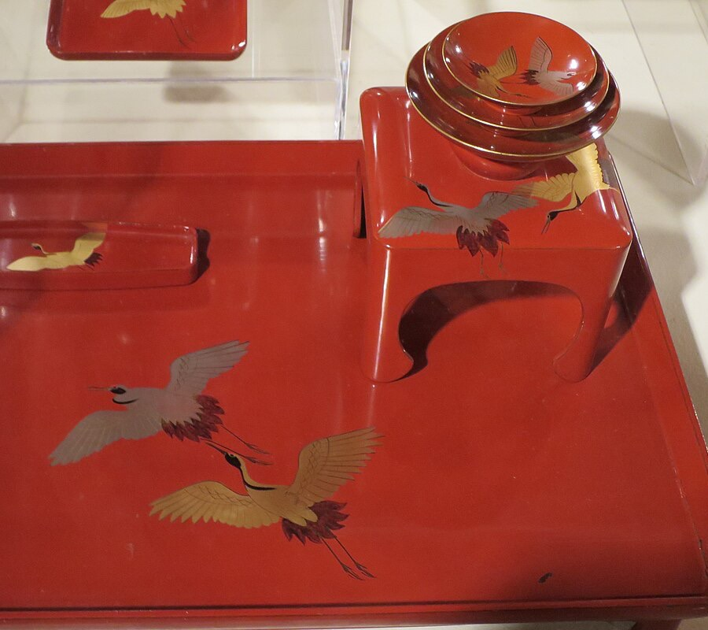

Apresentação especial
Instituto Niten · Kenjutsu
Demonstração da arte do combate de espadas japonesas, com foco em Kata — a forma, a disciplina e o espírito do samurai.
Cada encontro é único e valioso
入場無料 Entrada gratuita
O encontro
Ichigo ichie é uma expressão japonesa nascida na cerimônia do chá: “uma vez, um encontro”. Cada reunião acontece uma só vez na vida e, por isso, merece ser vivida com todo o coração.
Sonia Imanishi une-se à arte para oferecer um agradável encontro com exposição e feira de cerâmicas, junto às suas 15 alunas, e convida mestres e artistas para celebrar as belezas da Serra da Moeda e a cultura japonesa.
Mão na massa
Vagas limitadas. Reserve direto pelo WhatsApp com Geraldo Faraci · (31) 98854-2319
Para ver e sentir
Apresentação especial
Demonstração da arte do combate de espadas japonesas, com foco em Kata — a forma, a disciplina e o espírito do samurai.
Senbazuru · mil tsurus
Diz a lenda japonesa que quem dobra mil tsurus de papel tem um desejo realizado. O grou é símbolo de longevidade, paz e boa sorte — e voa com a gente em cada edição do Ichigô Ichiê.
Faça um desejo aqui e, no dia do evento, deixe-o na nossa Árvore dos Desejos e aprenda a dobrar o seu tsuru na oficina de Origami com o mestre Célio Costa.
0 tsurus já voaram · faltam 1.000 para os mil
Você já soltou 0 🕊
Os mil tsurus voaram!
Agora é só no evento! Deixe o dia reservado na sua agenda.
Arigatô gozaimasu! Muito obrigado por soltar os tsurus com a gente. Juntos completamos o senbazuru, e os desejos de todos seguem voando até o dia 28/11.

Gastronomia
Almoço e jantar com culinária japonesa e brasileira no Restaurante do Retiro do Chalé.
Para guardar e compartilhar
Como chegar
Condomínio Retiro do Chalé · Brumadinho, Minas Gerais — aos pés da Serra da Moeda.